Data Science for Electron Microscopy
Week 10: Attention, transformers & graph networks for EM
FAU Erlangen-Nürnberg
Institute of Micro- and Nanostructure Research


Recap: where we left off
- Week 9: clustering, autoencoders, the VAE and rVAE, t-SNE/UMAP — a good representation is most of the work.
- The architecture thread so far: MLP (Week 6) — every input talks to every hidden unit with a fixed weight; CNN (Week 7) — only neighbouring pixels talk, with shared weights.
- Gap: many EM signals are not “local grids”: Friedel pairs sit on opposite sides of a diffraction pattern, EELS edges couple over hundreds of eV, atom columns form an irregular set with vacancies.
- Today’s question: how do we build networks whose connectivity matches that structure — learned from content (attention) or given by physics (graphs)?
Today’s questions and road map
- Why does a CNN struggle to tell a square from a rectangular lattice in a rotated diffraction pattern — and why does one attention layer help?
- What does an attention map actually tell you — and why is it not an explanation?
- How do you learn on a set of atom columns whose number and order change from image to image?
- Road map: inductive bias · attention (Q/K/V, \(\sqrt{d_k}\), multi-head) · positional encoding · transformer block & ViT · tokenising EM data, 4D-STEM/MAE, DiffractGPT · attention ≠ explanation · graphs & message passing · sequences · unifying picture · wrap-up.
- Self-study:
notebooks/week10_attention_gnn.ipynb— self-attention from scratch, a mini-ViT on synthetic diffraction patterns (with a positional-encoding ablation), and a hand-written message-passing layer on an atom-column graph.
Learning outcomes
By the end of this week you can:
- Write down scaled dot-product attention \(\mathrm{softmax}(QK^\top/\sqrt{d_k})V\), explain every symbol, and justify the \(\sqrt{d_k}\).
- Explain why attention is permutation-equivariant and how positional encodings (1-D, 2-D, physical axis) restore order.
- Choose a tokenisation for an EM modality (image patches, Bragg discs, spectral windows, 4D-STEM scan positions) and argue its consequences.
- Describe ViT, masked-autoencoder pretraining and their use on 4D-STEM data; place DiffractGPT-style generative models in context.
- Critically read an attention map and state why attention weights are not a faithful explanation.
- Build an atom-column graph, write one message-passing update, and prove it is permutation-equivariant.
- Relate CNN, GNN and transformer as grid, sparse and complete graphs — and pick one for a given EM task and data budget.
Architecture = assumption about who talks to whom
- MLP (Week 6): every input connected to every unit; weights fixed after training; no notion of neighbourhood or order.
- CNN (Week 7): each pixel combines its \(k\times k\) neighbours with the same kernel everywhere → locality + translation equivariance.
- GNN (today): each atom combines its graph neighbours; the graph comes from physics (bonds, cutoff distance).
- Transformer (today): each token combines all tokens, with weights computed from the content.
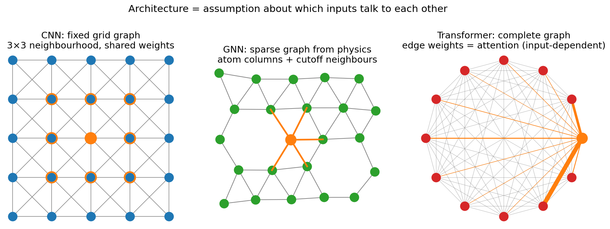
When CNN locality fails in EM
- Diffraction patterns: lattice type and orientation live in the angles and length ratios between discs, and Friedel pairs \(I(\mathbf{g}) = I(-\mathbf{g})\) sit on opposite sides of the central beam. A stack of \(3\times 3\) convolutions needs \(\sim\)(pattern radius) layers before antipodal discs interact.
- Spectra: an EELS L\(_{2,3}\) white-line ratio compares peaks ~15 eV apart; ELNES/EXAFS correlations extend over 100+ eV — long-range along the energy axis.
- Atom columns: positions are irregular, the number of columns varies per image, vacancies break the grid — pixels are not the natural unit.
- In-situ series: frame \(t\) depends on frames \(t-1, t-2, \dots\) with variable lag — order matters, grid locality in time is too restrictive.
A CNN can learn long-range relations — through depth and pooling — but it pays in layers and data. Attention couples any two inputs in one layer.
Attention as a soft dictionary lookup
- A Python dict:
d["key"] → value— exact match or nothing. - A soft dict: a query is compared to every key; the answer is a similarity-weighted average of all values.
- Each token \(\mathbf{x}_i \in \mathbb{R}^{d}\) plays three roles, via three learned projections:
- query \(\mathbf{q}_i = W_Q^\top \mathbf{x}_i\) — “what am I looking for?”
- key \(\mathbf{k}_j = W_K^\top \mathbf{x}_j\) — “what do I contain?”
- value \(\mathbf{v}_j = W_V^\top \mathbf{x}_j\) — “what do I pass on if selected?”
- Output: \(\mathbf{z}_i = \sum_j a_{ij}\,\mathbf{v}_j\), with \(a_{ij} = \dfrac{\exp(\mathbf{q}_i^\top\mathbf{k}_j/\sqrt{d_k})}{\sum_{j'}\exp(\mathbf{q}_i^\top\mathbf{k}_{j'}/\sqrt{d_k})}\).
Scaled dot-product attention — the matrix view
\[ Q = XW_Q,\quad K = XW_K,\quad V = XW_V \qquad X\in\mathbb{R}^{L\times d} \]
\[ \boxed{\;\mathrm{Attention}(Q,K,V) = \underbrace{\mathrm{softmax}\!\left(\frac{QK^\top}{\sqrt{d_k}}\right)}_{A\,\in\,\mathbb{R}^{L\times L}\text{, rows sum to 1}} V\;} \]
- \(QK^\top\): all pairwise similarities at once — \(L\times L\) scores.
- Row-wise softmax turns scores into weights; row \(i\) of \(A\) = where token \(i\) looks.
- Cost: \(\mathcal{O}(L^2 d)\) compute, \(\mathcal{O}(L^2)\) memory — fine for 64 patches, painful for \(10^4\).
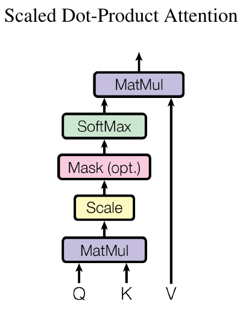
Hand-traced example: four tokens
Four patch tokens, \(d_k = 2\), \(Q = K\) except D:
| token | \(\mathbf{q}\) | \(\mathbf{k}\) | \(\mathbf{v}\) |
|---|---|---|---|
| A bright disc | (1,0) | (1,0) | (1,0) |
| B weak disc | (0,1) | (0,1) | (0,1) |
| C disc pair | (1,1) | (1,1) | (1,1) |
| D background | (0,0) | (−1,0) | (0,0) |
Row C: scores \((0.71, 0.71, 1.41, -0.71)\) → weights \((0.23, 0.23, 0.47, 0.06)\) → \(\mathbf{z}_C = (0.71, 0.71)\).
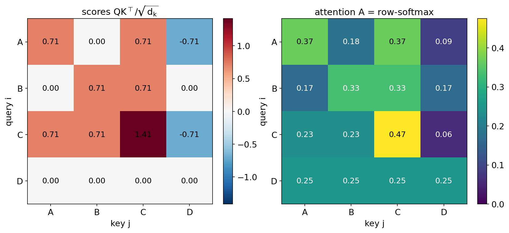
Why divide by \(\sqrt{d_k}\)?
- If \(\mathbf{q}, \mathbf{k}\) have i.i.d. zero-mean, unit-variance entries: \(\mathrm{Var}(\mathbf{q}^\top\mathbf{k}) = \sum_{\ell=1}^{d_k}\mathrm{Var}(q_\ell k_\ell) = d_k\).
- Large-variance scores → softmax becomes nearly one-hot → its Jacobian ≈ 0 → gradients vanish at initialisation.
- Dividing by \(\sqrt{d_k}\) restores unit variance; for \(d_k = 64\), divide by 8.
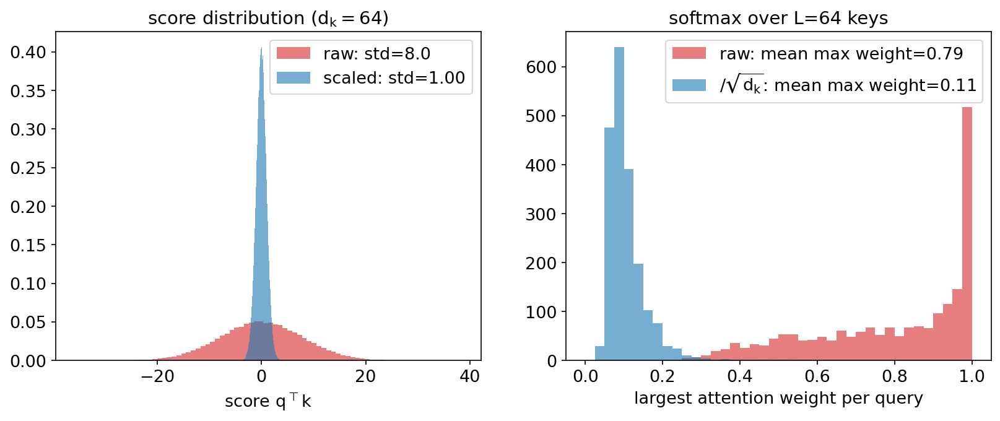
Multi-head attention
\[ \mathrm{head}_h = \mathrm{Attention}(XW_Q^{(h)}, XW_K^{(h)}, XW_V^{(h)}) \] \[ \mathrm{MHA}(X) = [\mathrm{head}_1,\dots,\mathrm{head}_H]\,W_O \]
- \(H\) heads with \(d_k = d/H\) each → same cost as one full-width head.
- Each head learns its own notion of similarity: one head may pair Friedel partners, another group discs on the same lattice row, another attend to the central beam.
- Typical: ViT-Tiny \(d = 192\), \(H = 3\); our notebook \(d = 48\), \(H = 4\).
- Heads have no guaranteed interpretable role — do not over-read one head.
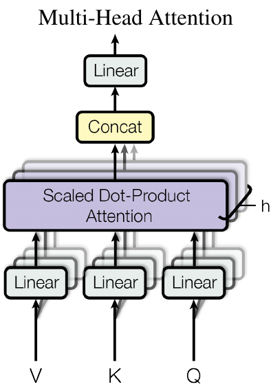
Attention is permutation-equivariant
- Permute the tokens with a permutation matrix \(P\): \(X \to PX\).
- Then \(Q \to PQ\), \(K \to PK\), \(V \to PV\), scores \(\to P\,QK^\top P^\top\); row-softmax commutes with \(P\), so \[\mathrm{Attention}(PX) = P\,\mathrm{Attention}(X).\]
- Same output vectors, just reordered — attention treats its input as a set.
- A feature for sets (atoms, detected discs, a composition {Fe, Cr, Ni}), a bug for grids and axes (patch \((0,0)\) vs \((7,7)\) of a diffraction pattern; 532 eV vs 708 eV).
Fix at the input, not in the operator: add a positional encoding to each token, \(\tilde{\mathbf{x}}_i = \mathbf{x}_i + \mathbf{p}_i\).
Sinusoidal and learned positional encodings
\[ \mathrm{PE}(p, 2i) = \sin\!\big(p / 10000^{2i/d}\big),\quad \mathrm{PE}(p, 2i+1) = \cos\!\big(p / 10000^{2i/d}\big) \]
- Multi-scale “odometer”: low dimensions oscillate fast (fine position), high dimensions slowly (coarse position).
- \(\mathrm{PE}(p+k)\) is a fixed rotation of \(\mathrm{PE}(p)\) → the model can express relative offsets.
- Learned embeddings (ViT, our notebook): one trainable vector per slot; simple, cannot extrapolate beyond the trained length.
- RoPE: rotate \(\mathbf{q}, \mathbf{k}\) by position — standard in modern LLMs.
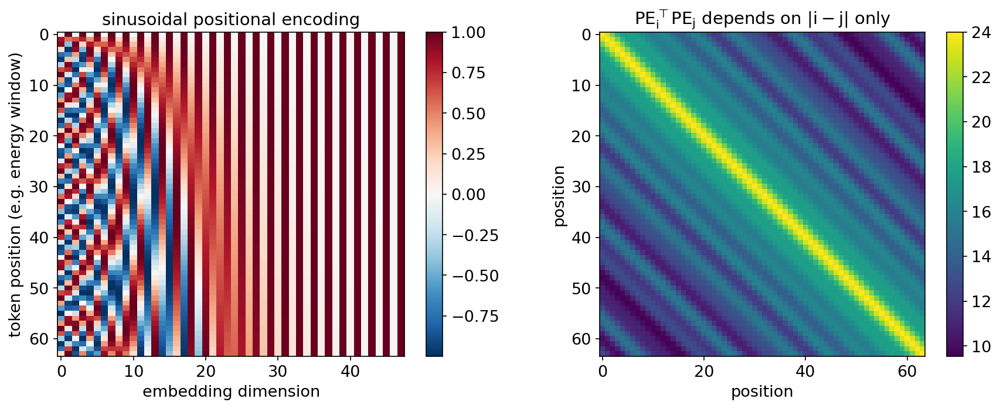
Positional encodings for EM axes
- Micrographs & diffraction (2-D): 2-D encodings — learned per patch, or separable sin/cos in \((x, y)\). For diffraction, polar coordinates \((k_r, k_\theta)\) relative to the central beam are physically natural.
- Spectra (1-D, physical units): the energy axis is absolute — the O-K edge is at 532 eV whether it is token 5 or token 17. Encode the actual energy (e.g. sinusoids of \(E\) in eV), not the token index, if windows can shift.
- 4D-STEM: two axes of position — detector \((k_x, k_y)\) inside a pattern and scan \((x, y)\) across the specimen. Decide which one your tokens span.
- In-situ time series: causal ordering — relative or causal encodings, plus a causal mask (no peeking at future frames).
Diagnostic: ablate the positional encoding. If accuracy does not drop, your task did not use geometry — or your model found a shortcut.
The transformer block
\[ \begin{aligned} X' &= X + \mathrm{MHA}(\mathrm{LN}(X))\\ X'' &= X' + \mathrm{MLP}(\mathrm{LN}(X')) \end{aligned} \]
- Attention mixes information across tokens.
- MLP (two dense layers, GELU) transforms each token individually — Week 6’s MLP, applied per token.
- Residual connections (Week 7 ResNet) keep gradients flowing through deep stacks.
- LayerNorm (pre-norm) keeps activations well-scaled.
- Stack \(N\) blocks; nothing else. Parameters do not depend on \(L\).
class Block(nn.Module):
def __init__(self, d, heads):
super().__init__()
self.n1 = nn.LayerNorm(d)
self.n2 = nn.LayerNorm(d)
self.attn = SelfAttention(d, heads)
self.mlp = nn.Sequential(
nn.Linear(d, 2*d), nn.GELU(),
nn.Linear(2*d, d))
def forward(self, x):
x = x + self.attn(self.n1(x))
return x + self.mlp(self.n2(x))Vision Transformer (ViT)
- Patchify: cut the image into \(P\times P\) patches; 32×32 with \(P = 4\) → \(L = 64\) tokens.
- Linear embed each flattened patch to \(d\) dimensions.
- Prepend a learnable [CLS] token; add positional embeddings.
- \(N\) transformer blocks.
- Classify from the final [CLS] state with a linear head Dosovitskiy, Alexey et al., (2021).
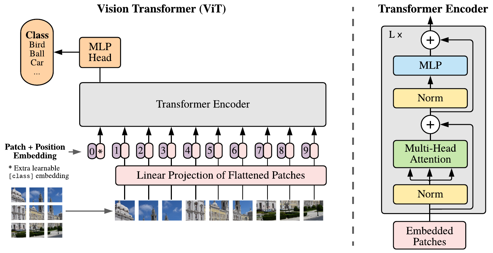
ViT vs CNN: data is the price of weak bias
- On ImageNet-scale data without heavy pretraining, ResNets beat ViTs; ViTs overtake only with very large pretraining sets and compute.
- Reason: a CNN gets locality and translation equivariance for free; a ViT has to learn them from data.
- EM reality: 100–10 000 labelled patterns. From-scratch ViTs overfit.
- Remedies: self-supervised pretraining on unlabelled data (MAE, Week 8), pretrained backbones, hybrids (CNN stem + transformer), or smaller patches + strong augmentation.
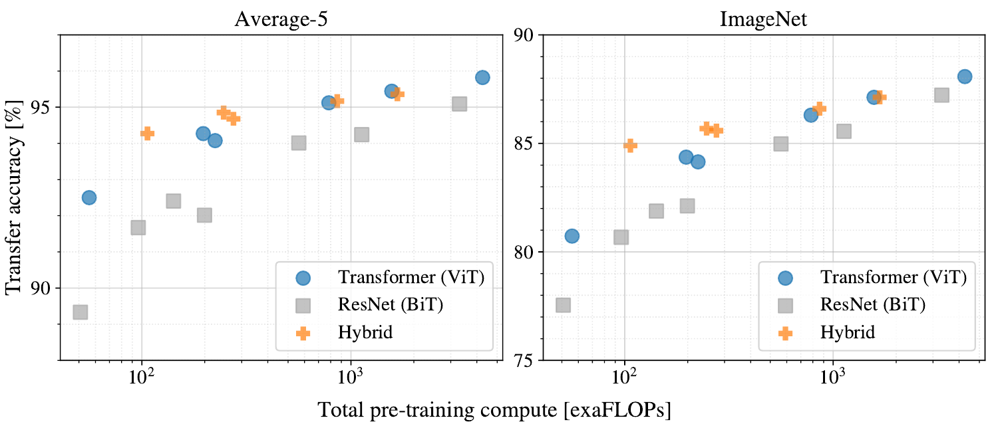
Tokenising EM data: the token is the inductive bias
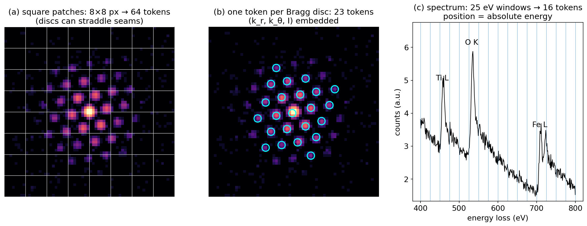
(a) Square patches on a diffraction pattern: simple, but discs can straddle patch seams. (b) One token per detected Bragg disc, embedding radius, angle and intensity — the geometry becomes explicit. (c) Spectral windows along the energy loss axis; the positional encoding must carry absolute energy.
Case study: transformer for 4D-STEM orientation & phase maps
- 4D-STEM: \(10^5\)–\(10^6\) diffraction patterns per scan.
- Je et al. (2026): each Bragg disc is a token \((k_r, k_\theta, I)\); encoder + mean pooling → orientation and phase; symmetry-aware loss Je, Kwanghwi et al., (2026).
- Amortised inference: ~14× (CPU) to ~100× (GPU) faster than template matching.
- Few labels? Masked autoencoder pretext He, Kaiming et al., (2022): hide ~75 % of patches, reconstruct them — no labels; then fine-tune on a few hundred labelled positions.
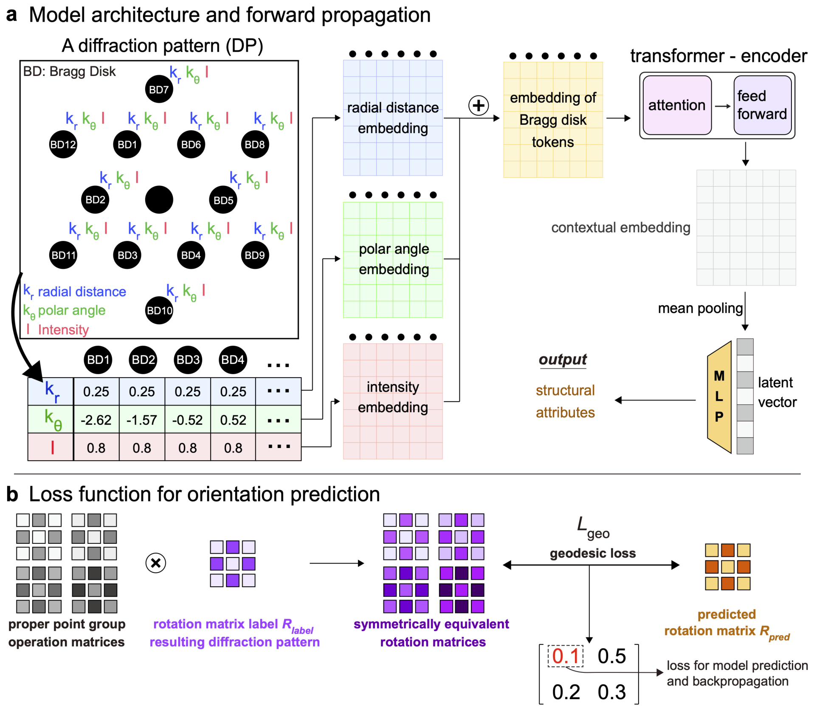
Spectra, XRD and DiffractGPT
- 1-D signals: XRD/EELS windows along \(2\theta\) or energy → tokens; one layer couples distant peaks Simonnet, Titouan et al., (2025).
- DiffractGPT Choudhary, Kamal, (2025), doi:10.1021/acs.jpclett.4c03137: a generative transformer maps powder XRD → atomic structure as a token sequence — an inverse problem (Weeks 12–13) solved by generation.
- LLM outlook: literature mining, analysis code, agents calling instrument APIs (Week 11).
- Caveat: outputs are candidates — physics validation is non-negotiable.
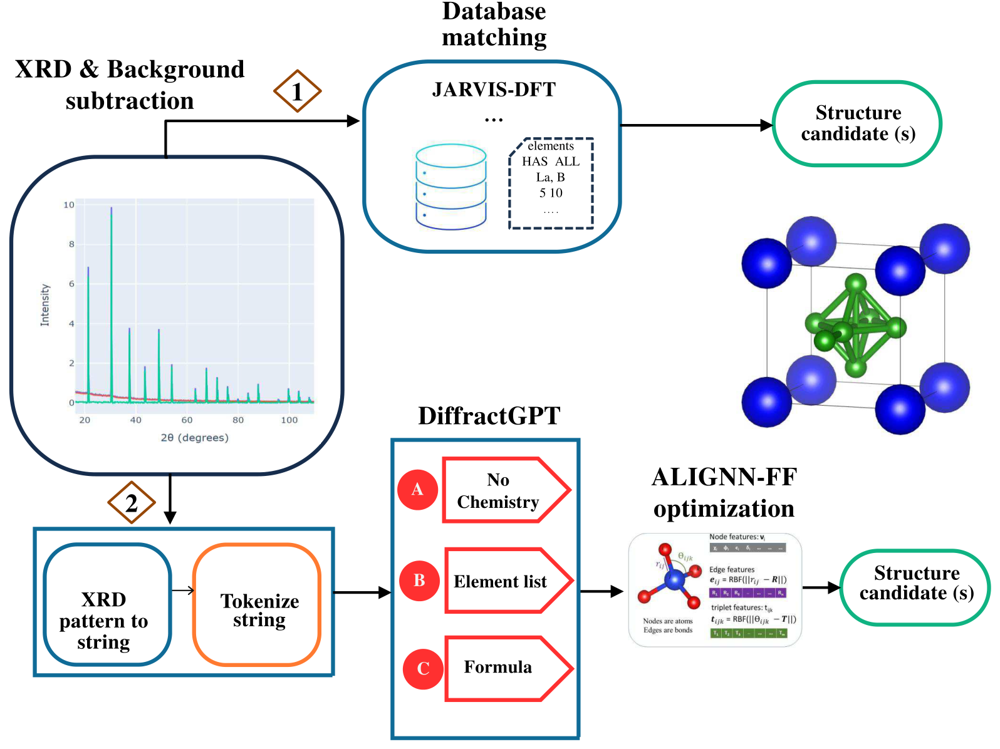
Mini-ViT on synthetic diffraction patterns (notebook)
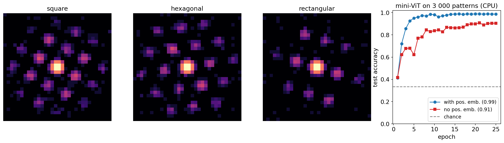
Left: example 32×32 synthetic spot patterns (random orientation, lattice scale, excitation, Poisson noise). Right: test accuracy of a ~60 k-parameter mini-ViT (patch 4 → 64 tokens, \(d=48\), 4 heads, 3 blocks), trained on 3 000 patterns on a CPU, with and without learned positional embeddings.
- Task: classify square / hexagonal / rectangular lattice from a randomly rotated pattern — requires angles and length ratios between discs.
- With positional embeddings: 0.99 test accuracy; without: 0.90 — the “bag of patches” keeps what is inside each patch but loses the global geometry (chance = 0.33).
- Same model at 10× lower dose (not in training): 0.42, barely above chance — while the mean softmax confidence stays at 0.98. Deploy at the dose you validated (Week 2, Week 11).
Attention maps: what the model “looks at”
- Read row [CLS] of the attention matrix \(A\) in the last block: how much the class token draws from each patch → a heat map over the image.
- Attention rollout multiplies the per-layer attention matrices (with the residual identity) to trace information flow through depth Abnar, Samira et al., (2020).
- Cheap (no backward pass) and patch-level, hence smoother than pixel saliency (Week 7).
- Useful as a sanity check: an orientation model should attend to discs, not to vacuum, the beam stop or a detector seam.
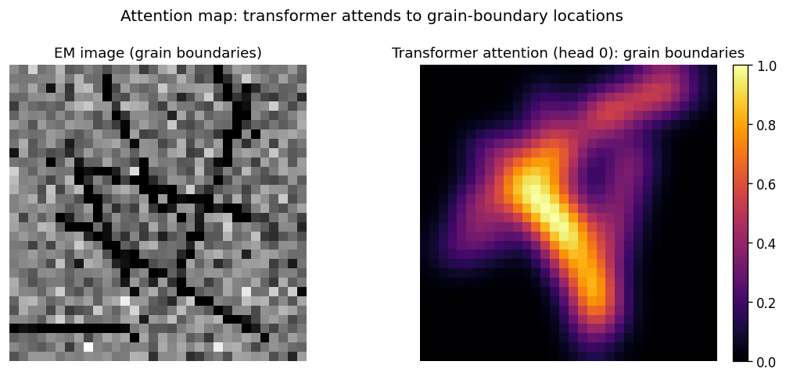
Why attention ≠ explanation
- Values matter, not just weights: \(\mathbf{z}_i = \sum_j a_{ij}\mathbf{v}_j\) — a large \(a_{ij}\) on a token with a tiny \(\mathbf{v}_j\) contributes nothing; a small weight on a huge value can dominate.
- Residual stream bypass: \(X' = X + \mathrm{MHA}(\cdot)\) — information flows around attention; the head output is only part of the story.
- Mixing through depth: after layer 1, token \(j\) already contains information from all other patches; “attention to patch \(j\)” in layer 3 is not attention to the pixels of patch \(j\).
- Non-uniqueness: different attention patterns can give the same prediction Jain, Sarthak et al., (2019); attention can be informative, but must be validated Wiegreffe, Sarah et al., (2019).
Attention is a hypothesis about what matters. An intervention (occlusion, ablation, counterfactual) is the test.
Checking attention against occlusion (notebook)
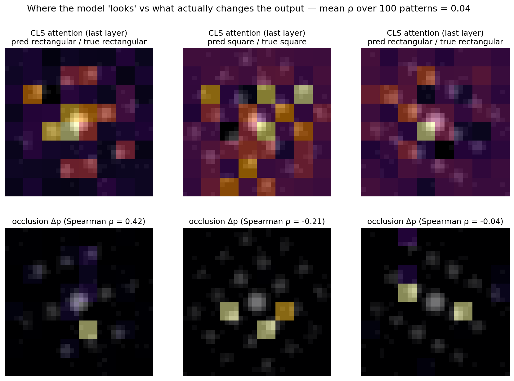
Top: last-layer CLS attention (head mean) overlaid on three test patterns. Bottom: occlusion sensitivity — the drop in predicted-class probability when each 4×4 patch is blanked. Spearman rank correlation per pattern in the titles; mean over 100 test patterns in the header.
Mean Spearman correlation, attention vs occlusion (100 patterns): ≈ 0.04 — essentially none.
Using attention maps responsibly
- ✅ Do use attention to spot shortcuts (scale bars, beam stop, detector seams, sample-holder edges).
- ✅ Do aggregate over heads and layers (rollout) and look at many examples, including failures.
- ✅ Do confirm with an intervention: occlusion, masking the suspected region, or a counterfactual pattern (e.g. remove one Friedel partner).
- ❌ Don’t claim “the model learned the physics because it attends to the discs” — discs are also where the signal is.
- ❌ Don’t report one hand-picked head on one hand-picked image.
- Ladder so far: coefficients (W4) → permutation importance/SHAP (W5) → saliency/Grad-CAM/occlusion (W7) → latent-space reading (W9) → attention maps (W10) → uncertainty as a trust gate (W11).
From atom-column images to graphs
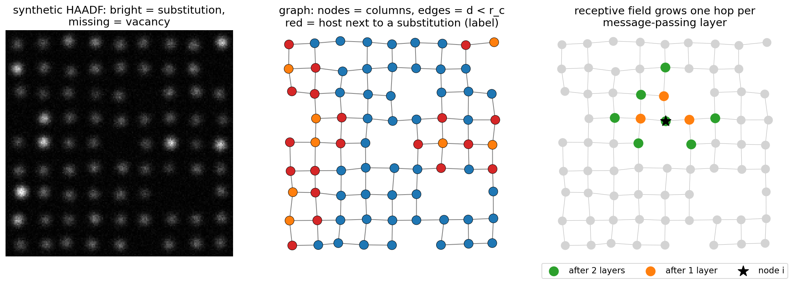
Left: synthetic HAADF image with brighter substitutional columns and vacancies. Middle: the graph — nodes are detected columns, edges connect columns closer than a cutoff \(r_c\); red nodes are host columns next to a substitution (a label that needs neighbour information). Right: the receptive field of node \(i\) after one and two message-passing layers.
Graph construction for EM data
- Graph \(G = (V, E)\): nodes \(i \in V\) with features \(\mathbf{h}_i^{(0)}\); edges \((j \to i) \in E\) with features \(\mathbf{e}_{ij}\).
- Node features: integrated column intensity (∝ \(Z^{\sim1.7}\) in HAADF), Gaussian width, local descriptors (Week 5: neighbour count, bond angles).
- Edges: cutoff \(\|\mathbf{r}_i - \mathbf{r}_j\| < r_c\) (between first and second shell), or \(k\)-NN; for crystals include periodic images Xie, Tian et al., (2018), doi:10.1103/PhysRevLett.120.145301.
- Edge features: distance \(d_{ij}\) (often expanded in Gaussian radial basis functions), displacement \(\mathbf{r}_j - \mathbf{r}_i\) — the carrier of strain information.
- Pitfalls: cutoff too small → disconnected graph at a strained region; too large → second-shell neighbours; results must be reported with \(r_c\) (reproducibility).
The message-passing template
\[ \boxed{\;\mathbf{h}_i^{(\ell+1)} = U\Big(\mathbf{h}_i^{(\ell)},\; \bigoplus_{j\in\mathcal{N}(i)} M\big(\mathbf{h}_i^{(\ell)}, \mathbf{h}_j^{(\ell)}, \mathbf{e}_{ij}\big)\Big)\;} \]
- \(M\): message function (small MLP) — what neighbour \(j\) tells node \(i\), given their relation \(\mathbf{e}_{ij}\).
- \(\bigoplus\): permutation-invariant aggregation — sum, mean or max (or attention weights!).
- \(U\): update function — combine own state with the aggregated message (MLP, residual).
- Same \(M, U\) at every node → weight sharing, like a convolution kernel; works for any number of nodes Gilmer, Justin et al., (2017).
- Notebook version: \(\mathbf{h}_i' = \mathrm{ReLU}\big(W_\text{self}\mathbf{h}_i + \sum_{j\in\mathcal{N}(i)} \mathrm{MLP}(\mathbf{h}_j)\big)\) — ten lines of PyTorch with
index_add_.
Permutation invariance and equivariance
- Nodes have no natural order — the peak finder lists columns in arbitrary order. The model must not care.
- Equivariance (node outputs): permuting the node order permutes the outputs identically: \(f(PX, PAP^\top) = P\,f(X, A)\).
- Holds because \(M, U\) are shared and \(\bigoplus\) is a symmetric function (sum does not care about order).
- Invariance (graph outputs): a sum/mean readout \(\mathbf{h}_G = \sum_i \mathbf{h}_i^{(L)}\) gives \(f(PX, PAP^\top) = f(X, A)\) — Deep Sets in a nutshell Zaheer, Manzil et al., (2017).
- Notebook check: shuffle node indices, re-run — outputs agree exactly (max deviation 0 in our run).
- Other symmetries (rotation, translation): use distances/angles as edge features (invariant) or equivariant layers (vectors) — MG U09: SchNet, NequIP, MACE Schütt, Kristof T. et al., (2018), doi:10.1063/1.5019779.
Receptive field, depth and over-smoothing
- After \(L\) layers, node \(i\) has seen all nodes within \(L\) hops — the GNN analogue of the CNN receptive field (Week 7).
- Too shallow: a label that depends on the second shell cannot be learned with one layer.
- Too deep: repeated neighbour averaging makes all node embeddings converge — over-smoothing; the GNN forgets which column is which.
- Practical recipe (materials): 2–4 layers + residuals + RBF-expanded relative distances/displacements (not absolute positions → translation invariance).
- Long-range effects (elastic fields of a dislocation, charge) are hard for local GNNs — add a global node (MEGNet-style) or attention layers → graph transformers.
GNN for defect classification (notebook)
- 60 synthetic column lattices (12×12, 8 % substitutions, 5 % vacancies); train on 40 images, test on 20 unseen images (grouped split, Week 4).
- Node label: host column next to a substitution — not decidable from the column’s own intensity.
- Per-node MLP (0 layers): 0.55 balanced accuracy — essentially chance, as it must be.
- One message-passing layer: 0.99; two layers: 1.00.
- Same model on shuffled node order: identical outputs (equivariance check).
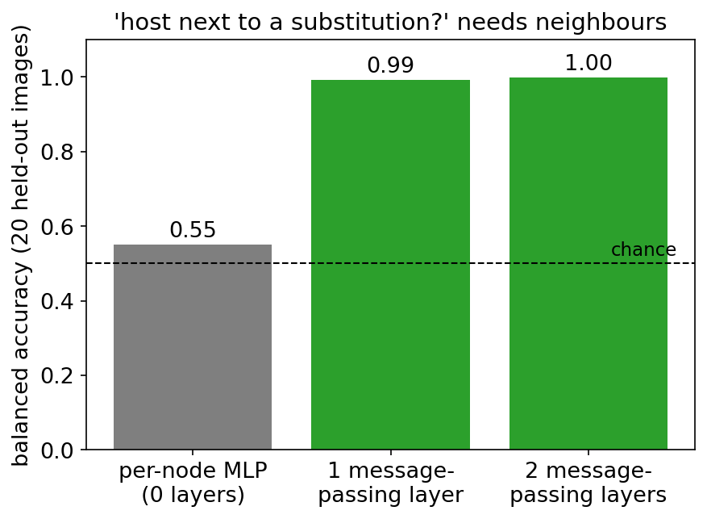
Sequences for in-situ EM: RNN → transformer
- In-situ heating, biasing, liquid-cell TEM → movies: frame \(t\) depends on earlier frames.
- RNN / LSTM: hidden state \(\mathbf{s}_t = f(\mathbf{s}_{t-1}, \mathbf{x}_t)\), weights shared over time; gates mitigate vanishing gradients Hochreiter, Sepp et al., (1997), doi:10.1162/neco.1997.9.8.1735. Sequential and slow; memory fades.
- Causal transformer: each frame attends to all earlier frames in one layer; parallel training.
- Start frame-wise (Week 7 per-frame segmentation + tracking); add temporal context only when the label needs history.
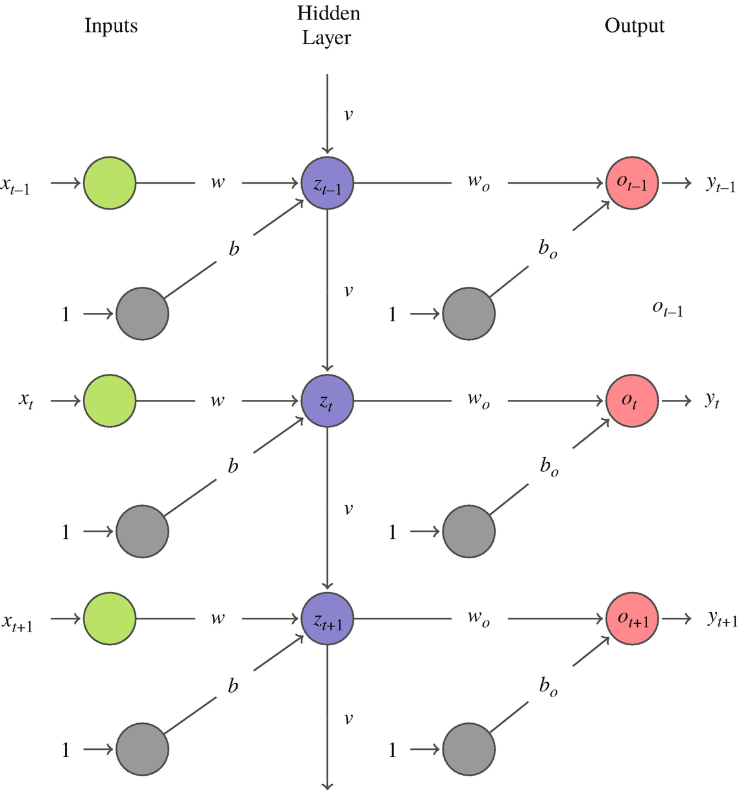
The unifying picture
One update rule for all: \[ \mathbf{h}_i' = \phi\Big(\mathbf{h}_i,\ \sum_{j \in \mathcal{N}(i)} w_{ij}\, \psi(\mathbf{h}_j)\Big) \]
| graph \(\mathcal{N}(i)\) | weights \(w_{ij}\) | |
|---|---|---|
| CNN | grid, \(k\times k\) | fixed by relative offset |
| GNN | sparse, from physics | from message fn / edge features |
| Transformer | complete | \(\mathrm{softmax}(\mathbf{q}_i^\top\mathbf{k}_j/\sqrt{d_k})\) |
| RNN | chain (past) | fixed, shared over time |
- A CNN is a GNN on a grid graph with translation-shared, offset-dependent weights.
- A transformer is a GNN on the complete graph whose edge weights are computed from content.
- A graph transformer is attention restricted to (or biased by) a physical graph.
- Choosing an architecture = choosing \(\mathcal{N}(i)\) and how \(w_{ij}\) is computed — i.e. how much structure you hard-code versus learn.
Decision guide: which architecture for which EM data?
| EM data | structure | first choice | consider |
|---|---|---|---|
| SEM/TEM micrograph segmentation | local texture on a grid | U-Net (W7) | ViT/SAM backbone if pretrained |
| Diffraction pattern (orientation, phase, strain) | long-range, symmetric | disc-token transformer or CNN baseline | MAE pretraining on unlabelled scans |
| EELS/EDS spectrum | 1-D physical axis, long-range edges | 1-D CNN / PCA+trees (W3, W5) | spectral transformer with energy PE |
| Atom-column positions | irregular set with neighbours | GNN | descriptors + trees (W5) as baseline |
| Grain/particle networks | objects + relations | GNN | tabular descriptors (W5) |
| In-situ movie | frames + causal time | frame-wise CNN + tracking | temporal transformer / latent sequence |
| Small labelled data (< 500) | any | simplest model that respects the physics | pretrained features + linear probe (W8) |
Notebook: week10_attention_gnn.ipynb
- Part 1 — self-attention from scratch in NumPy: hand-traced example, equivariance, softmax saturation.
- Part 2 — mini-ViT on synthetic diffraction: PE ablation, low-dose test, attention vs occlusion.
- Part 3 — (optional) message passing by hand on atom-column graphs.
- Exercises: multi-head attention, patch size, displacement edge features.
notebooks/week10_attention_gnn.ipynb

Runs on CPU in under 5 minutes; only NumPy, matplotlib, scikit-learn and PyTorch (no torch_geometric).
Summary: the week in six points
- Attention \(=\mathrm{softmax}(QK^\top/\sqrt{d_k})V\): each token is updated by a content-weighted average of all tokens; \(\sqrt{d_k}\) keeps the softmax from saturating; multi-head = several similarity notions in parallel.
- Attention is permutation-equivariant → positional encodings are a physics decision (2-D for patterns, absolute energy for spectra, causal for time).
- ViT = patches → tokens → transformer blocks → [CLS] head; weak inductive bias → data-hungry → MAE/self-supervised pretraining on unlabelled 4D-STEM data.
- Tokenisation is the inductive bias: patches, Bragg discs, spectral windows, scan positions.
- Attention ≠ explanation: weights ignore value magnitudes, residual paths and mixing through depth — validate with interventions.
- GNNs: message passing on atom-column graphs, permutation-equivariant by construction; CNN = grid graph, GNN = sparse graph, transformer = complete graph.
Must-know for the exam
- Scaled dot-product attention formula, the shape of \(A\) (\(L\times L\), rows sum to 1), and \(\mathcal{O}(L^2)\) cost.
- Why \(1/\sqrt{d_k}\): \(\mathrm{Var}(\mathbf{q}^\top\mathbf{k}) = d_k\) → softmax saturation → vanishing gradients.
- Self-attention (and message passing with sum aggregation) is permutation-equivariant; positional encodings break the symmetry on purpose.
- ViT pipeline and why ViTs need more data than CNNs; MAE as label-free pretraining.
- Two reasons why attention weights are not a faithful explanation, and one intervention to test them.
- Message-passing update (message, permutation-invariant aggregation, update); receptive field = number of layers; over-smoothing.
- CNN = grid graph, GNN = sparse physical graph, transformer = complete graph with input-dependent weights.
Next week: uncertainty, Gaussian processes & autonomous EM
- Today’s remaining gap: our mini-ViT dropped from 0.99 to 0.42 accuracy at 10× lower dose — with its softmax confidence still at 0.98. No warning. Every model today produces a point prediction with no statement of confidence.
- Week 11: aleatoric vs epistemic uncertainty, deep ensembles and MC dropout, calibration, conformal prediction, and out-of-distribution detection as a trust gate.
- Gaussian processes & Bayesian optimisation: models that know what they do not know — and use it to choose the next measurement.
- Autonomous EM: closing the loop between model and microscope — where the transformer and LLM agents from today meet uncertainty-aware decision making.
Continue
Backup slides
Material beyond the 90-minute lecture path, for self-study and questions.
4D-STEM transformer: speed and the MAE pretext
- Speed: at \(10^6\) patterns, ~14× (CPU) to ~98× (GPU) faster than template matching Je, Kwanghwi et al., (2026).
- The label problem: orientation labels need simulation or slow indexing; phase labels need expert annotation.
- Masked autoencoder (MAE) pretext He, Kaiming et al., (2022): hide 75 % of patches, reconstruct them from the rest — no labels. The unlabelled 4D-STEM stack itself is the pretraining corpus.
- Then fine-tune (or linear-probe, Week 8) on the few hundred labelled positions you can afford.
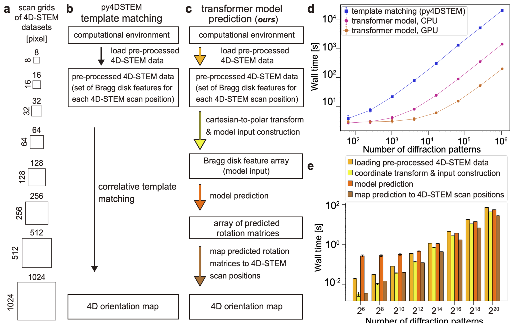
Spectra and XRD as token sequences
- Cut the 1-D pattern into fixed-length segments → tokens; prepend [CLS]; add positional encoding; transformer encoder; linear head.
- Phase identification depends on the set of peak positions and their ratios across the whole \(2\theta\) (or energy) axis — a relational, long-range task.
- Multimodal: elemental priors (known chemistry) enter as extra tokens — no bolted-on branch needed Simonnet, Titouan et al., (2025).
- EELS/EDS analogue: windows along the energy axis; edge onset + fine structure coupled in one layer. Poisson noise (Week 2) still dictates the loss.
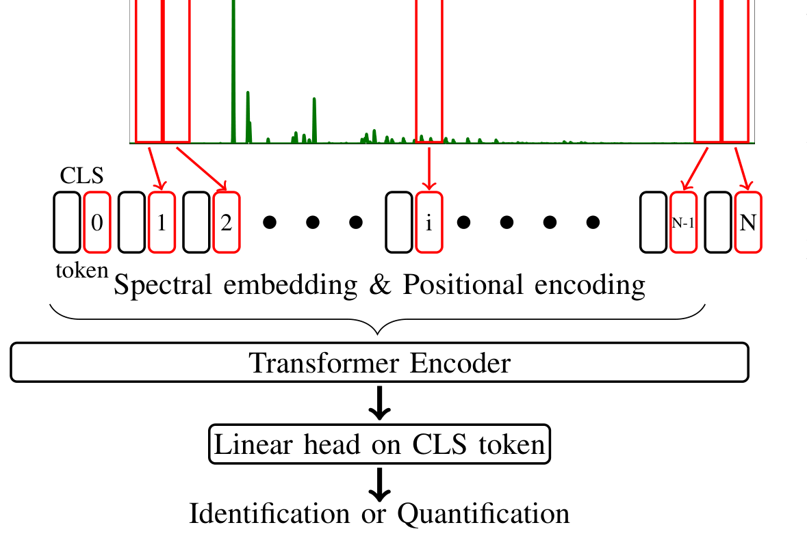
Anti-patterns for transformers on EM data
- Data hunger: from-scratch ViT on 500 micrographs → overfit; a ResNet or U-Net wins. Fix: pretraining (MAE/DINO, Week 8) or a smaller model.
- Positional embedding forgotten or shuffled: the model silently becomes a bag of patches. Fix: ablate and check the drop.
- Patch seams through discs: accuracy caps. Fix: smaller/overlapping patches or disc tokens.
- Dose / detector mismatch: trained at high dose, deployed on beam-sensitive samples → confident and wrong. Fix: dose augmentation (Week 8), validate at deployment dose, uncertainty (Week 11).
- Leaky splits: random probe positions of the same scan in train and test → inflated accuracy. Fix: split by scan / specimen (Week 4).
GNNs for materials beyond the microscope
- CGCNN — crystal graph, gated convolution on bonds, sum/mean pooling → formation energy, band gap Xie, Tian et al., (2018), doi:10.1103/PhysRevLett.120.145301.
- SchNet — continuous-filter convolutions on interatomic distances, rotation/translation invariant by construction Schütt, Kristof T. et al., (2018), doi:10.1063/1.5019779.
- Equivariant GNNs (NequIP, MACE) — vector/tensor features, machine-learned interatomic potentials (MG U09).
- Where EM meets them: atom positions from STEM/tomography → graph → GNN predicts local energy/strain; or GNN potentials generate structures for simulation-based training data (Week 8: sim-to-real).
- Beyond atoms: grain graphs from EBSD/SEM (grains = nodes, boundaries = edges) → property prediction from microstructure topology.
Practical: when does a sequence model pay off?
- Frame-wise model first: if each frame can be analysed alone (segmentation per frame, Week 7), do that and post-process (tracking, smoothing).
- Add temporal context when the label depends on history: “is this a nucleation event or noise?”, “will this particle coalesce?”
- Cost: attention over \(T\) frames × \(L\) patches per frame is \(\mathcal{O}((TL)^2)\) — factorise: spatial attention within a frame, temporal attention across frames per location.
- Latent sequences: encode each frame with the Week 9 autoencoder, then model the trajectory of latent codes — cheap and interpretable.
- Beam effects: the electron dose itself changes the specimen over time — include cumulative dose as a covariate, or you will “discover” beam damage as physics.
References
©Philipp Pelz - FAU Erlangen-Nürnberg - Data Science for Electron Microscopy